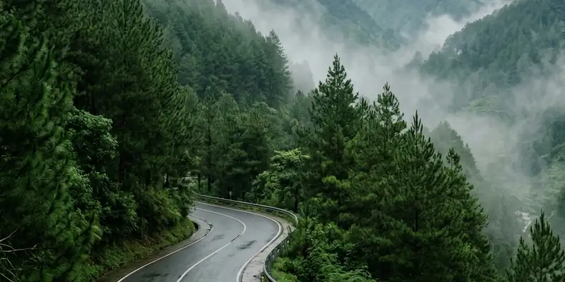

Study tour rafting adalah kegiatan sekolah yang memadukan wisata edukasi dengan aktivitas arung jeram, sehingga memerlukan perencanaan matang mulai dari jadwal, anggaran, hingga koordinasi vendor.
Ringkasan Inti
- Perencanaan study tour rafting dimulai dari penentuan tujuan dan jumlah peserta.
- Koordinasi dengan vendor outbound perlu dilakukan jauh sebelum hari pelaksanaan.
- Persiapan administratif meliputi izin orang tua dan data kesehatan siswa.
- Jadwal kegiatan perlu mempertimbangkan cuaca dan kondisi sungai.
- Evaluasi setelah kegiatan membantu perbaikan study tour di masa mendatang.
Bagaimana Tahapan Merencanakan Study Tour Rafting?
Tahapan merencanakan study tour rafting meliputi penentuan tujuan kegiatan, survei lokasi, penentuan anggaran, dan koordinasi dengan vendor sebelum jadwal keberangkatan ditetapkan.
Secara umum, tahapan yang dapat diikuti panitia sekolah adalah:
- Menentukan tujuan edukasi yang ingin dicapai melalui kegiatan rafting.
- Melakukan survei atau komunikasi awal dengan beberapa vendor outbound kandidat.
- Menetapkan anggaran study tour berdasarkan jumlah peserta dan fasilitas yang dibutuhkan.
- Mengurus perizinan dari pihak sekolah, yayasan, maupun orang tua siswa.
- Menyusun jadwal keberangkatan dengan mempertimbangkan kalender akademik.
Perencanaan yang matang pada tahap awal ini akan memudahkan koordinasi teknis pada tahap selanjutnya, termasuk saat berkomunikasi dengan vendor mengenai detail pelaksanaan di lapangan.
Apa Saja Persiapan yang Perlu Dilakukan Sekolah Sebelum Kegiatan?
Persiapan sebelum study tour rafting mencakup pengumpulan data kesehatan siswa, penyiapan perlengkapan, dan sosialisasi prosedur keselamatan kepada seluruh peserta.
Beberapa persiapan penting yang perlu dilakukan panitia sekolah:
- Mengumpulkan formulir izin orang tua beserta informasi kesehatan siswa.
- Menyosialisasikan aturan dan prosedur keselamatan rafting kepada siswa sebelum keberangkatan.
- Menyiapkan daftar barang bawaan seperti pakaian ganti dan perlengkapan pribadi.
- Mengatur pembagian kelompok siswa per perahu bersama pihak vendor.
- Menyiapkan tim guru pendamping yang bertugas mengawasi selama kegiatan berlangsung.
Persiapan yang menyeluruh ini membantu mengurangi risiko kendala teknis maupun non-teknis selama pelaksanaan study tour rafting di lapangan.

Koordinasi teknis antara pihak panitia sekolah dengan vendor outbound sangat esensial untuk mensukseskan kegiatan.
Bagaimana Cara Berkoordinasi dengan Vendor Rafting yang Tepat?
Koordinasi dengan vendor rafting yang tepat dilakukan dengan komunikasi awal yang jelas mengenai jumlah peserta, kebutuhan teknis, dan jadwal pelaksanaan kegiatan.
Beberapa langkah koordinasi yang dapat dilakukan panitia sekolah:
- Menyampaikan jumlah peserta dan rentang usia siswa kepada vendor sejak awal.
- Meminta rincian paket, termasuk fasilitas keselamatan dan rute yang akan dilalui.
- Mendiskusikan rencana cadangan apabila cuaca tidak memungkinkan pelaksanaan rafting.
- Menyepakati jadwal briefing keselamatan bersama instruktur sebelum hari pelaksanaan.
- Menetapkan titik kumpul dan alur logistik agar kegiatan berjalan tepat waktu.
Salah satu vendor yang dapat diajak berkoordinasi untuk kebutuhan study tour rafting adalah Gemilang Katun Outbound, yang biasa menangani kegiatan outbound dan rafting untuk rombongan sekolah.
Kesimpulan
Study tour rafting memerlukan perencanaan yang terstruktur, mulai dari penentuan tujuan kegiatan, persiapan administratif, hingga koordinasi teknis dengan vendor outbound. Dengan persiapan yang matang, sekolah dapat memastikan kegiatan berjalan aman, lancar, dan memberikan pengalaman belajar yang bermakna bagi siswa.
FAQ
Waktu persiapan dapat bervariasi tergantung skala kegiatan, namun umumnya sekolah disarankan mulai berkoordinasi dengan vendor beberapa minggu sebelum jadwal pelaksanaan.
Kebutuhan asuransi tambahan dapat didiskusikan dengan pihak vendor maupun sekolah sesuai kebijakan masing-masing dan tingkat risiko kegiatan.
Sekolah dan vendor sebaiknya menyepakati rencana cadangan sejak awal, seperti penundaan jadwal atau penggantian dengan kegiatan outbound lain di lokasi yang sama.